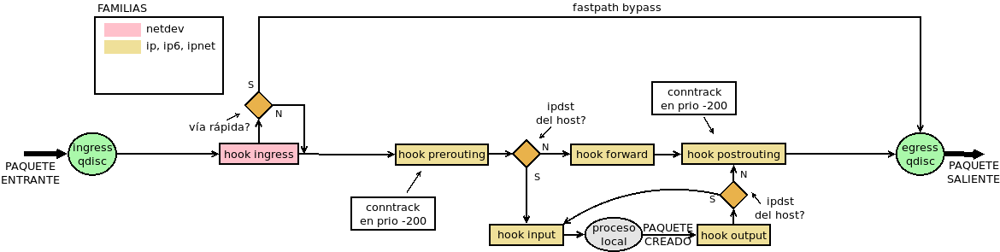
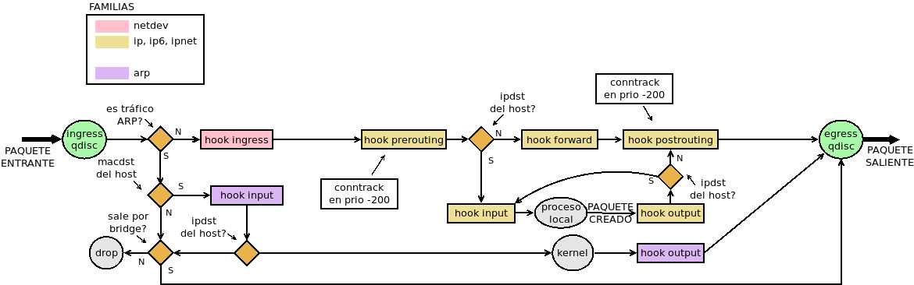

8.7.3.2.4. Uso avanzado¶
8.7.3.2.4.1. Marcas¶
Las marcas son señales que pueden establecerse sobre los paquetes a fin de reconocerlos más adelante en el flujo. Por ejemplo, en un enganche de la familia bridge somos capaces de reconocer cuál es la interfaz física (el puerto) por el que entró un paquete, mientras que un enganche de la familia ip, sólo somos capaces de reconocer la interfaz bridge virtual. Si marcamos los paquetes en el primer enganche, seremos capaces de reconocer el puerto de entrada en el segundo consultando la marca.
Hay dos tipos de marcas:
La marca de paquete que es aquella que se establece individualmente para cada paquete. En realidad, las marcas no se escriben sobre el propio paquete, sino sobre su representación en netfilter, por lo que no podrá ser consultada fuera del propio cortafuegos.
La marca de conexión que es aquella que se establece sobre la conexión a la que pertenece un paquete. En consecuencia, es consultable desde el resto de paquetes que pertenecen a la marca. Es común que se establezca en un enganche de tipo nat en el primer paquete.
Criterio |
Argumento |
Descripción |
|---|---|---|
meta |
mark |
Comprueba la marca del paquete. |
meta mark 0x1 |
||
mark set |
Establece la marca sobre el paquete. |
|
meta mark set 0x1 |
||
ct |
mark |
Comprueba la marca de la comexión. |
ct mark 0x1 |
||
mark set |
Establece la marca sobre la conexión. |
|
ct mark set 0x1 |
Por ejemplo, si queremos limitar el caudal de tráfico SSH, pero sólo de los clientes que se conectan a nuestro servidor por eth0:
table netdev filter {
chain INGRESS {
type filter hook ingres device eth0 priority filter
tcp dport ssh meta mark set 1
}
chain INPUT {
type filter hook input priority filter
meta mark 1 limit over 512 kbytes/second drop
}
}
8.7.3.2.4.2. Colecciones¶
Incluimos bajo este epígrafe las herramientas de que dispone nftables para agrupar elementos
8.7.3.2.4.2.1. Conjuntos¶
En nftables hay dos tipos de conjuntos:
Anónimos que son aquellos invariables que se añaden directamente a las reglas y, sin ponerles nombre, ya se han introducidos en algunos ejemplos:
# nft add rule filter INPUT tcp dport {http, https} accept
este, por ejemplo, es un conjunto anónimimo que almacena dos puertos: el 80 y el 443. El conjunto se ha creado así y así permanecerá mientras exista la regla.
Nominados, que se asocian a tablas y pueden usarse en las reglas. Estos conjuntos implementan las posibilidades de ipset en iptables. A ellos dedicaremos el epígrafe.
Los conjuntos nominados se crean asociándole una tabla, dotándolos de un nombre y declarando qué tipo de dato contendrán. Por ejemplo:
# nft add table filter
# nft add set filter www {type inet_service\;}
Por ahora nos hemos limitado a crear un conjunto llamado «www» que puede contener puertos. Podría haber contenido también:
Tipo |
Descripción |
|---|---|
ipv4_address |
Direcciones IPv4 |
ipv6_address |
Direcciones IPv6 |
ether_address |
Direcciones MAC. |
inet_proto |
Protocolos |
inet_service |
Puertos de conexión. |
mark |
Marcas. |
ifname |
Nombres de interfaces. |
Para usarlo basta anteponer una arroba al nombre:
# nft add chain filter INPUT "{type filter hook input priority 0;}"
# nft add rule filter INPUT tcp dport @www counter
aunque aún no contiene ningún puerto. Además del tipo, pueden añadirse otras características al crear el conjunto:
Característica |
Opción |
Descripción |
|---|---|---|
type |
Tipo de los elementos que constituyen el conjunto. |
|
timeout |
Tiempo de vida de los elementos que se añaden. Pasado éste, desaparecen automáticamente. Implica que se puedan indicar tiempo de vida al añadir elementos. |
|
elements |
Añade los elementos de la lista al conjunto |
|
nft add set filter hosts \»{type ipv4_addr; elements={1.1.1.1, 1.0.0.1};}\» |
||
flags |
constant |
El contenido del conjunto no puede cambiar mientras esté vinculado a alguna regla. |
dynamic |
Crea conjuntos dinámicos, que añaden elementos directamente desde las reglas. Lo trataremos en el epígrafe dedicado a meters. |
|
interval |
El conjunto contiene intervalos, no elementos individuales. |
|
timeout |
Al añadir elementos, se puede indicar el tiempo de vida de cada elemento |
|
nft add set filter hosts \»{type ipv4_addr; flags constant, timeout;}\»
nft add element filter hosts {1.1.1.1 timeout 1m}
|
||
size |
Cantidad máxima de elementos que puede contener el conjunto. |
|
Podemos añadir elementos:
# nft add element filter www {http, https}
# nft list set filter www
table ip filter {
set www {
type inet_service
elements = { http, https }
}
}
aunque también pueden añadirse automáticamente a través de las reglas. Por ejemplo, así controlaríamos las máquinas que nos ha hecho ping en la última hora:
# nft add set filter pines {type ipv4_addr; timeout 1h; size 65535}
# nft add rule filter INPUT icmp type echo-request add @pines {ip saddr}
Advertencia
Cuando se añaden elementos de este modo, es más que conveniente fijar un tamaño máximo y un tiempo de vida del elemento en el conjunto.
Los conjuntos con nombre puede eliminarse:
# nft delete set filter www
siempre y cuando no estén vinculados a ninguna regla.
8.7.3.2.4.2.2. Concatenaciones¶
Las concatenaciones permiten agrupar selectores (o sea, condiciones) para tratarlas de modo conjunto. Como operador se usa el punto («.»). Por ejemplo:
# nft add filter FORWARD ip saddr . ip daddr {10.0.0.4 . 10.0.0.8, 10.0.0.5 . 10.0.0.10} counter
En este caso, el selector vandŕa tanto para si la conexión es entre 10.0.0.4 y 10.0.0.8 como si es entre 10.0.0.5 y 10.0.0.10.
Esta es una expresión literal, pero podría haberse construido también un conjunto nomimal concatenado los dos valores necesarios:
# nft add set filter orig-dest {type ipv4_addr . ipv4_addr\;}
# nft add element filter orig-dest {10.0.0.4 . 10.0.0.8, 10.0.0.5 . 10.0.0.10}
# nft add filter FORWARD ip saddr . ip daddr @orig-dest counter
También es posible concatenar las claves en los mapas y disccionarios.
Ver también
Échele un vistazo al epigrafe de concatenaciones de la wiki de nftables.
8.7.3.2.4.2.3. Mapas¶
Los mapas son conjuntos de valores a los que se accede a través de una clave. Como en el caso de los conjuntos:
Pueden ser anónimos o nominados.
Pueden utilizarse en las sentencias de las reglas.
Puede modificarse su contenido manualmente.
Y a diferencia de ellos, no pueden añadirse elementos a través de reglas. Para utilizarlos debe hacerse lo siguiente:
dnat to tcp dport map {80: 192.168.1.100, 8888: 192.168.1.101}
counter name tcp dport map @conn
es decir, debe colocarse primero la expresión que define el valor y después la expresión que define la clave. El primero es un ejemplo de mapa anónimo y el segundo de mapa con nombre don se requiere hacer algunas definiciones previas:
# nft add counter filter c22
# nft add counter filter c28
# nft add map filter conn {type inet_service: counter}
# nft add element filter conn {ssh: c22, http: c80}
Y ahora sí, podria usarse el mapa:
# nft add rule filter INPUT ct state new counter name tcp dport map @conn
8.7.3.2.4.2.4. Diccionarios¶
Los diccionarios son mapas en que los valores son acciones terminalesi (excepto reject). Por ejemplo, esta regla salta dependiendo del tipo de tráfico a una u otra cadena de usuario:
# nft add rule filter ct state new tcp port vmap {ssh: jump SSH, ftp: jump FTP}
También es posible hacer diccionarios nominados.
8.7.3.2.4.2.5. Conjuntos dinámicos¶
Cuando en las reglas usamos objetos de inspección de estado, en particular, caudales y cuotas, como por ejemplo:
# nft add rule filter output tcp sport ssh quota over 100 mbytes drop
el objeto (la cuota en este caso) se actualiza y se comprueba cada vez que se hay tráfico de descarga que provocan nuestro clientes del servicio SSH. Esta cuota es general y, cualquier cliente que descargue algo, contribuirá a aumentarla. En principio, si nuestra intención fuera establecer una cuota individual por cliente, deberíamos incluir tantas regla distintas como clientes tengamos:
# nft add rule filter output tcp sport ssh ip daddr 1.1.1.1 quota over 10 mbytes drop
# nft add rule filter output tcp sport ssh ip daddr 1.1.1.2 quota over 10 mbytes drop
# etc...
esto es inviable, pero los conjuntos dinámicos vienen a resolvernos la papeleta. Un conjunto dinámico es aquel conjunto que relaciona un elemento con un objeto de inspección de estado, de manera que al actualizar la presencia del objeto en el conjunto actualiza también su objeto correspondiente.
Tienen dos formas de expresarse:
Hasta la versión 0.9.0 (que es precisamente la que trae Buster) a través de la palabra clave meter.
A partir de la 0.9.1 a través del flag dynamic al crear conjuntos.
Aunque meter sigue existiendo, esta marcada como obsoleta por lo que podría ocurrir que en el futuro desapareciera. Sea como sea, trataremos ambas notaciones.
Nota
La comprobación de la cantidad de conexiones simultáneas también es susceptible de usarse en conjuntos dinámicos. De hecho, es la que se usará para emular el módulo connlimit de iptables.
dynamic
La nueva sintaxis es la que mejor ilustra el concepto que acabamos de explicar, así que la expondremos antes. Definimos primero el conjunto:
# nft add set filter sshquota "{type ipv4_addr; timeout 1h; flags dynamic; size 65535}"
para añadir después los elementos en la regla correspondiente. Con una política de lista blanca, la regla quedaría así:
# nft add filter OUTPUT tcp sport ssh add @sshquota {ip saddr quota 10 mbytes} accept
Y si fuera de lista negra:
# nft add filter OUTPUT tcp sport ssh add @sshquota {ip saddr quota over 10 mbytes} drop
meter
La obsoleta sintaxis con meter no es excesivamente diferente, aunque no defina explícitamente un conjunto. Con lista blanca, deberíamos hacer:
# nft add filter OUTPUT tcp sport ssh \
meter sshquota size 65535 {ip saddr timeout 5s quota 10 mbytes} accept
Con lista negra, el equivalente será:
# nft add filter OUTPUT tcp sport ssh \
meter sshquota size 65535 {ip saddr timeout 5s quota over 10 mbytes} drop
Em ambos casos, podremos consultar el contenido de «sshquota» con:
# nft list meter filter sshquota
En conjunción con las concatenaciones los conjuntos dinámicos permiten la implementación de las funcionalidades que ofrecen los módulos hashlimit y connlimit de iptables.
8.7.3.2.4.2.5.1. connlimit¶
Dependiendo de cuáles sean las conexiones que queremos limitar, así tendremos que obrar. Consideraremos una política de lista blanca en nuestro servidor:
- Conexiones totales de un servicio
Para limitar el número máximo de conexiones simultáneas a un servicio (p.e. un máximo de 5 conexiones a SSH):
# nft add rule filter INPUT ct state new tcp dport ssh \ meter sshconn size 65535 {tcp dport ct count 5} accept
- Conexiones totales de un cliente
Para limitar el número máximo de conexiones que un cliente puede hacer a cualquier servicio:
# nft add rule filter INPUT ct state new tcp dport ssh \ meter sshconn size 65535 {ip saddr ct count 5} accept
- Conexiones totales desde un cliente a un servicio
Para limitar el número máximo de conexiones que un mismo cliente puede hacer a un servicio:
# nft add rule filter INPUT ct state new tcp dport ssh \ meter sshconn size 65535 {ip saddr . tcp dport ct count 2} accept
Nota
Se usa meter por compacidad. A partir de los ejemplos, la implementación con dynamic es trivial.
8.7.3.2.4.2.5.2. hashlimit¶
El módulo hashlimit de iptables permite limitar el flujo de paquete según cuál sea el origen o destino de las conexión. A diferencia de limit, que limita el flujo de paquetes global. Para implementar esta funcionalidad en nftables basta con utilizar limit en conjunción con los conjuntos dinámicos y la concatenación. Por ejemplo, para limitar la descarga a través de SSH con cada cliente podemos hacer:
# nft add rule filter OUTPUT tcp sport ssh \
meter sshlimit size 65535 {tcp sport . ip daddr timeout 10s limit rate over 100kbytes/second} drop
que limitará a 100 KiB/s el tráfico de descarga para cada uno de los clientes.
Nota
nftables no tiene ningún equivalente exacto para el modulo recent de iptables, pero usar esta técnica se aproxima mucho. Recordemos que recent permite comprobar si en un periodo de tiempo determinado se ha accedido un determinado número de veces (p.e. haber accedido más de 5 veces al servicio SSH en el último minito). Aplicando conjuntos dinámicos podríamos establecer un caudal límite de 5 conexiones por minuto con una ráfaga de 5. No es exactamente lo mismo, porque si inmediatamente consumimos las 5 conexiones, con recent deberíamos esperar el minuto entero, mientras que aplicando el caudal límite no debemos esperar el minuto completo, sino que a los veinte segundos ya podríamos establecer una conexión más. Véase la aplicación de estas técnicas para evitar ataques de fuerza bruta con nftables.
8.7.3.2.4.2.6. flowtables¶
Las flowtables son un mecanismo para acelerar el paso de los paquetes por la máquina haciendo que fluyan directamente entre la entrada (el enganche ingress) y la interfaz de salida sin tener que atravesar todo los enganches intermedios:
Para lograrlo, el paquete que abre conexión sí debe realizar el camino habitual, especificar que los paquetes utilizarán el atajo y, obviamente lograr alcanzar su destino.
Advertencia
Hasta la versión 0.8.0, los conjuntos dinámicos se denominaron flowtables y se usaba la palabra flowtable en vez de meter. Pese a ello, son dos conceptos absolutamente distintos: téngalo en cuenta si ve en internet algún ejemplo de uso antiguo.
Para ilustrarlo supongamos que a través del cortafuegos deseamos alcanzar un servidor SSH que se encuentra en el otro extremo:
table ip filter {
flowtable sshpass {
hook ingress priority 0
devices = {eth0, eth1}
}
chain FORWARD {
type filter hook forward priority 0
policy drop
tcp dport ssh flow add @sshpass
tcp dport ssh counter accept
}
}
donde se ha supuesto que eth0 y eth1 son las interfaces del router. En la cadena FORWARD, declaramos que queremos que el tráfico SSH use «sshpass» y, además, aceptamos el paquete para que llegue a su destino. Incluímos un contador para comprobar que los siguientes paquetes de la conexión no lo aumentan, ya que jamás pasan por la cadena. Si incluyeremas un contador para el tráfico de réplica, veríamos que ocurre otro tanto.
La técnica también soporta NAT, de modo que si el servidor se encontrara en una red interna que el cortafuegos oculta haciendo enmascaramiento a la salida de eth0, seguiríamos pudiendo acelerar la intermediación de los paquetes:
table ip filter {
flowtable sshpass {
hook ingress priority 0
devices = { eth0, eth1 }
}
chain POSTROUTING {
type nat hook postrouting priority 100
oif "eth0" masquerade comment "Ocultamos la red 192.168.255.0/24"
}
chain PREROUTING {
type nat hook prerouting priority -100
iif "eth0" tcp dport 10022 dnat to 192.168.255.2:22 comment "DNAT al servidor SSH"
}
chain FORWARD {
type filter hook forward priority filter
policy drop
ct status dnat flow add @sshpass comment "Aceleramos el tránsito hacia los servidores"
ct status dnat accept
}
}
8.7.3.2.4.3. Zonas¶
8.7.3.2.4.4. Bridges¶
El tratamiento de las interfaces bridge se hace también con nft. Ahora bien, si se observa el diagrama de flujo (eliminando el flujo para tráfico ARP):

se comprobará que el tráfico que circula entre dos puertos de un mismo bridge no se ve afectado por las reglas que se escriban para los puntos de enganche del resto de las familias (excepto netdev, claro está). Podemos ratificarlo si para una máquina con dos interfaces en puente definimos estar reglas:
table ip filter {
chain FORWARD {
type filter hook forward priority filter;
ip protocol icmp counter
}
}
table bridge filter {
chain FORWARD {
type filter hook forward priority filter;
ip protocol icmp counter
iif eth0 ip protocol icmp counter
}
}
Al enviar un paquete ICMP desde una máquina conectada en un extremo a otra colocada en el otro extremo, el contador de la tabla de la familia ip no detectará ningún paquete, mientras que los contadores de la familia bridge, sí.
Otro aspecto a tener en cuenta es que en las reglas que se encuentren en cadenas de la familia bridge las interfaces serán los puertos del puente, es decir, si se pretende establecer una condición con iif la interfaz que deberá proporcionarse será aquel puerto físico del puente por el que entró el paquete (p.e. eth0). Sin embargo, si ese mismo paquete, estaba destinado para la propia máquina que hace de puente y, en consecuencia, atraviesa enganches de la familia ip (en concreto prerouting e înput) en las cadenas asociadas a tales enganches, la interfaz de entrada no será el puerto físico, sino la interfaz virtual bridge. Por tanto, la condición con iif deberá hacerse con br0 (o comoquiera que se llame la interfaz).
Finalmente, si nuestra intención es forzar a que los paquetes sean encaminados, no conmutados, la estrategia con nftables es alterar en el paquete la MAC de destino para que coincida con la de la interfaz bridge, obviamente antes de que netfilter lleve a cabo la comprobación para dirigir el paquete hacia en enganche forward de la familia bridge. Así pues, si nuestra intención fuera encaminar siempre el tráfico ICMP que entra por el puerto eth0, podríamos hacer:
table bridge filter {
chain PREROUTING {
type filter hook prerouting priority dstnat
iif eth0 icmp type echo-request ether daddr set de:ad:be:ef:27:d4 \
meta pkttype set unicast \
meta mark set 0x1
}
}
suponiendo que de:ad:be:ef:27:d4 sea la MAC de nuestra interfaz puente. Hemos aprovechado, además, para marcar tales paquetes por si más adelante necesitamos hacer referencia a tales paquetes.
Sí, además, tuviéramos intención de apropiarnos del paquete podríamos redirigirlo:
table ip nat {
chain PREROUTING {
type nat hook prerouting priority dstnat
meta mark 1 redirect
}
}
Nota
A fecha de redacción[1], no hay soporte aún para manipular el tráfico ARP que accede por un bridge (arpreply). Véase esta referencia.
8.7.3.2.4.5. Tráfico ARP¶
Lo que podemos hacer con este tráfico es, básicamente, dejar de responder a peticiones ARP o evitar aceptar respuestas ARP.
Son interesantes para este tráfico las siguientes condiciones:
Criterio |
Argumento |
Descripción |
|---|---|---|
arp |
ip daddr
ip saddr
|
IP de origen o destino. |
arp ip saddr != 192.168.0.5 |
||
ether daddr
ether saddr
|
MAC de origen o destino |
|
arp ether saddr ab:cd:ef:01:23 |
Por ejemplo, si queremos forzar a que la máquina con IP tenga el MAC 2e:ee:c5:01:23:45:
# nft add table arp filter
# nft add chain arp filter INPUT
# nft add rule arp filter INPUT arp operation request \
arp saddr ip 192.168.0.1 \
arp saddr ether != 2e:ee:c5:01:23:45 counter drop
Notas al pie